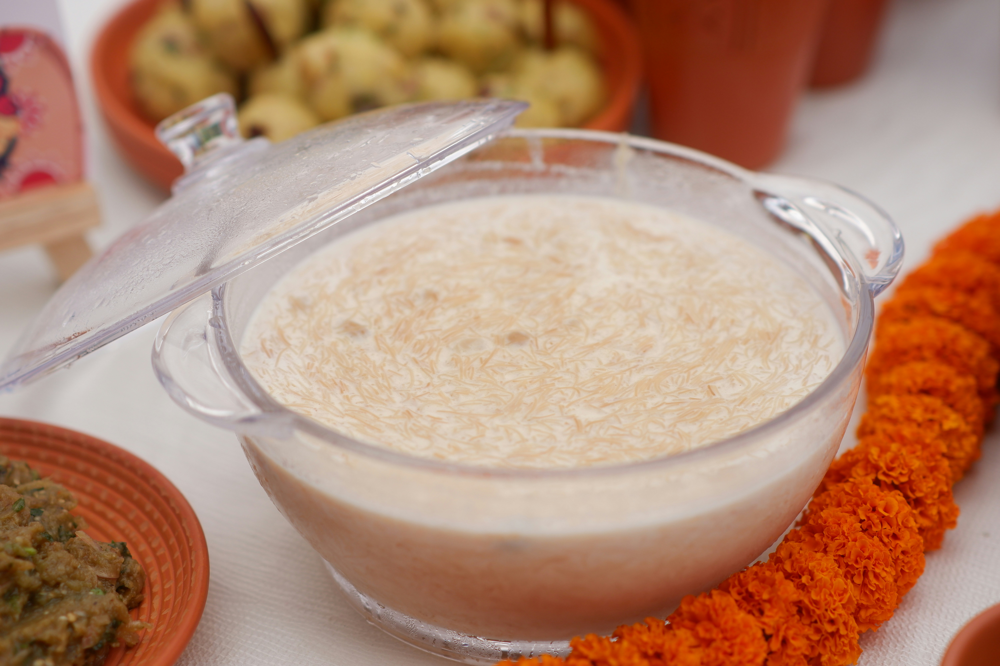

‘Arroz con leche’s recipe from IANSA

Description
Sweet and easy to make dessert. Your family will love it!
Ingredients
- 1 liter of milk
- 100 grams of rice
- Peel of 1 orange
- Peel of 1 lemon
- 1 cinnamon stick
- 70 grams of sugar
Steps
- Put everything but the sugar on a big pot
- Put the pot on low-medium heat and stir from time to time
- For 20-25 minutes keep the heat slow, avoid boiling
- Put the sugar on the mix and keep it another 10 minutes on the heat, stirring regularly
- Turn off the heat and let it cool before going to the fridge
- After 2-3 hours it will be cool enough to serve. Enjoy!
Reference links